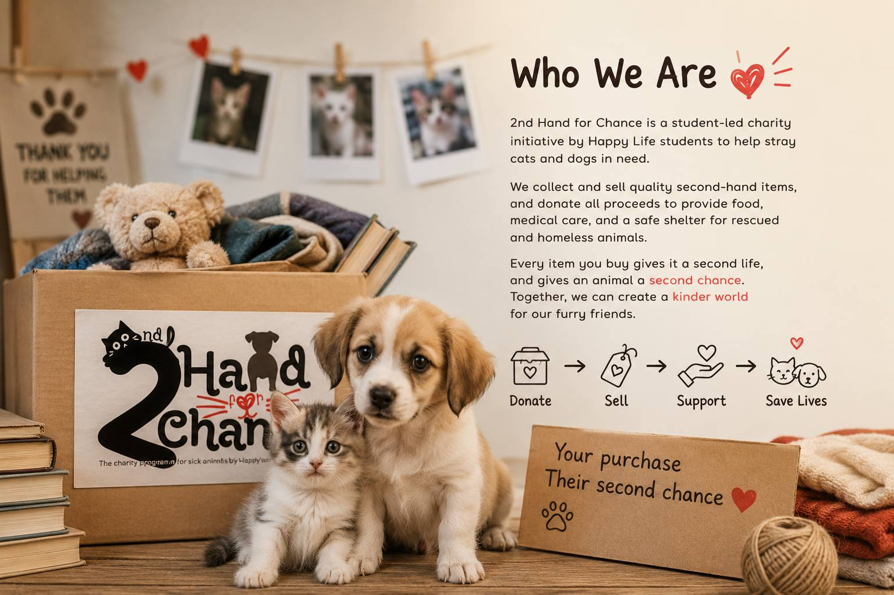

Your Trusted

2nd Hand for Chance is a charity initiative created by Happy Life students to support stray cats and dogs in need. By collecting and selling second-hand items, we turn things that are no longer needed into hope for animals that deserve love, care, and a better future.
Every purchase made through our event helps provide food, medical treatment, and essential support for rescued animals. We believe that kindness doesn't have to be expensive—sometimes, giving an item a second life can give an innocent animal a second chance to live.
Together, we are not just selling second-hand items—we are sharing compassion, creating hope, and changing lives, one purchase at a time. 🐾❤️
Turn pre-loved items into hope for animals in need.
Every purchase directly supports stray cats and dogs.
Reduce waste while making a positive impact.
Together, we can build a kinder future for every paw.